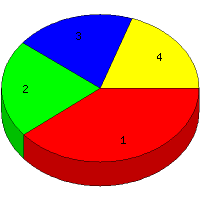

Week of 12/6/2009 to 12/12/2009: Top
4 of
4 File Types (Extensions)
Sorted by Access Count
Individual file types as determined by file extensions. All URLs that
do not contain an extension are counted as directories.

| Rank |
Type |
Accesses |
% |
Bytes |
% |
| 1 |
Directory (folder)
|
28 |
39.44 |
73,500 |
6.67 |
| 2 |
gif
|
15 |
21.13 |
218,858 |
19.85 |
| 3 |
htm
|
14 |
19.72 |
34,312 |
3.11 |
| 4 |
jpg
|
14 |
19.72 |
775,989 |
70.37 |